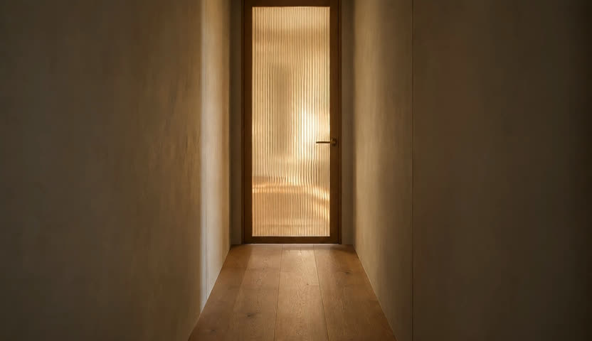

Ribeirão Preto · SP
Uma conversa antes de qualquer decisão.
Odontologia e harmonização facial em consultório no Jardim Califórnia. O contato é direto, por WhatsApp.
01 Quem atende

Você vai saber de quem é a mão antes de marcar.
Procedimento no rosto é decisão cara e difícil de desfazer. Quem indica já confia; quem foi indicado precisa de onde apoiar a confiança.
- RegistroCROSP 75.400
- FormaçãoUSP — Odontologia de Ribeirão Preto
- AtuaçãoEspecialista em Harmonização Facial
- Também ensinaProfessora em cursos de pós-graduação
- Atende emBellalux · Jardim Califórnia
Registro, formação e atuação como estão no perfil público dela — @drakatiamiyoshi (perfil verificado), lido em 24/09/2026. Não arredondamos nem acrescentamos nada.
02 A prova
226 pessoas avaliaram. A média não caiu de 5,0.
Não é número nosso e não é depoimento escolhido a dedo: é a avaliação pública do perfil dela no Google, aberta para qualquer pessoa conferir e contestar.
Fotos do perfil público dela no Instagram. Nenhuma imagem de paciente, nenhum antes-e-depois. Toque em qualquer foto para ler a publicação inteira. · Conferir no Google Maps
03 O que resolve
O que ela trata, com o nome que ela mesma usa.
Cada item aparece nomeado nas publicações dela, escrito do jeito que ela escreve. Quantos procedimentos cabem no seu caso é conversa de avaliação, não de site.
- Toxina botulínicaLinhas de expressão e olhar mais descansado.
- Preenchimento labialSempre associado a contorno e definição.
- Preenchimento de mentoPara proporção do terço inferior.
- Ácido hialurônico e HarmonyCaNomeados por ela nas publicações de harmonização.
- Bioestimuladores de colágenoIndicados após avaliação da pele.
- Ultrassom microfocado (HIPRO)O tema mais recorrente do perfil dela.
- Microagulhamento e PDRNCitados para qualidade de pele.
- PerfiloplastiaAjuste de perfil e harmonia do rosto.

04 A clínica
Ela atende na Bellalux.
Quem procura o nome dela chega à clínica onde ela trabalha. O perfil da própria Bellalux traz o registro da Dra. Katia e o mesmo WhatsApp deste site — os dois se confirmam.
- NomeBellalux Odontologia & Estética
- Como se descreve“Especialistas em Sorrisos e Harmonização Facial”
- Atendimento“Atendimento premium e humanizado”
- No perfil da clínicaDra. Katia Miyoshi · CROSP 75.400 · FORP-USP
Texto do perfil público @bellaluxodontologiaestetica, lido em 24/09/2026 · 148 publicações.
05 Onde fica
Jardim Califórnia, Ribeirão Preto.
- EndereçoAv. Braz Olaia Acosta, 727 — Sala 108
- BairroJardim Califórnia
- CidadeRibeirão Preto · SP · 14026-040
- WhatsApp(16) 92000-3886
Os horários de atendimento estão no perfil do Google e devem ser confirmados com o consultório.
06 Falar
Uma conversa antes de qualquer decisão.
Não há formulário nesta página. O botão abre o WhatsApp do consultório com a mensagem já escrita — é o mesmo destino em todos os botões daqui.
Falar pelo WhatsApp · (16) 92000-3886O retorno depende da agenda do consultório. Esta página não marca horário sozinha e não promete prazo de resposta.